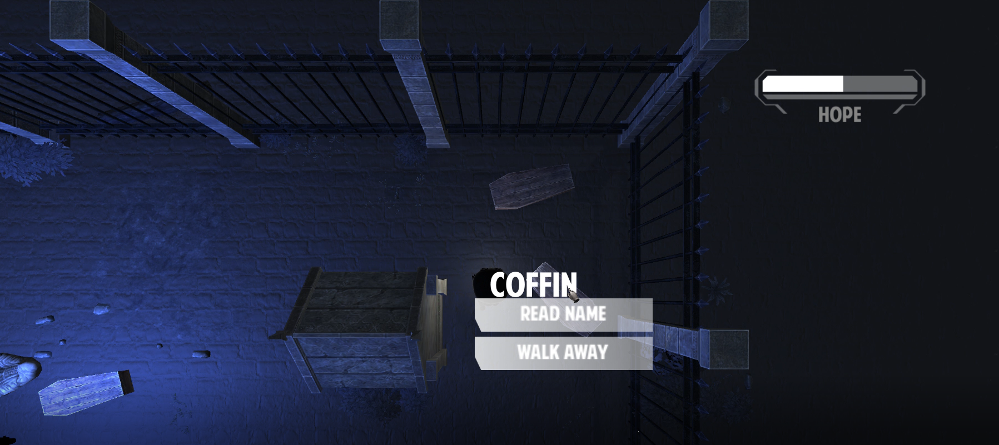
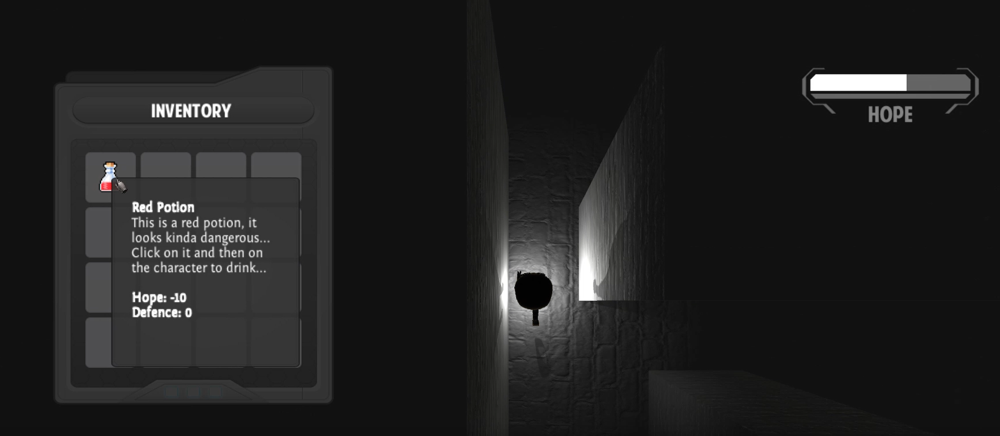
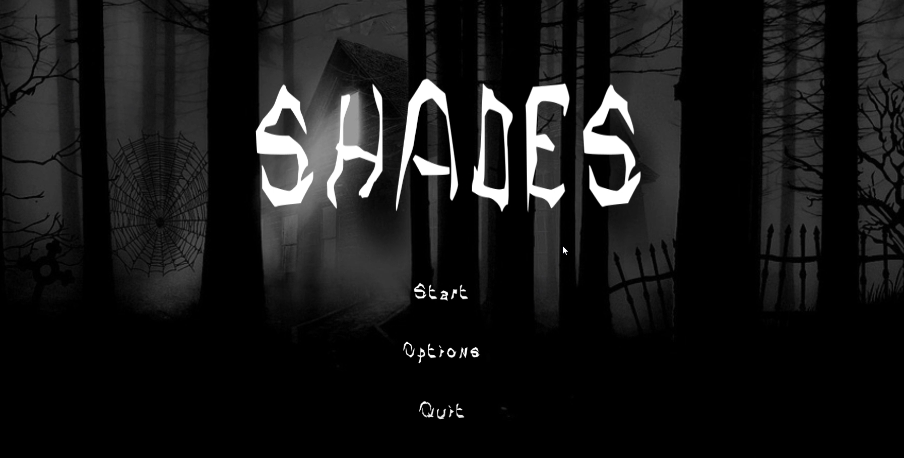
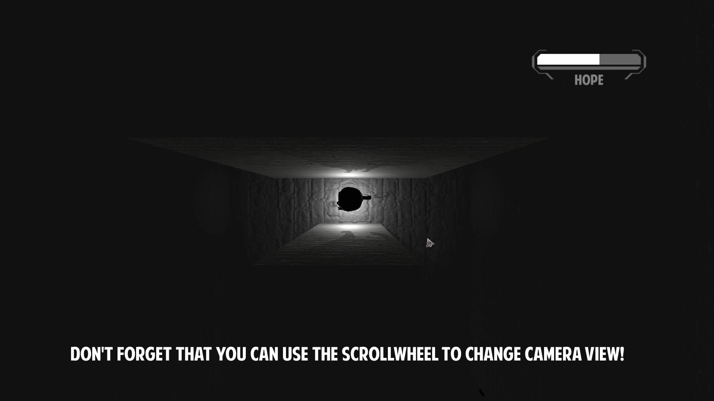
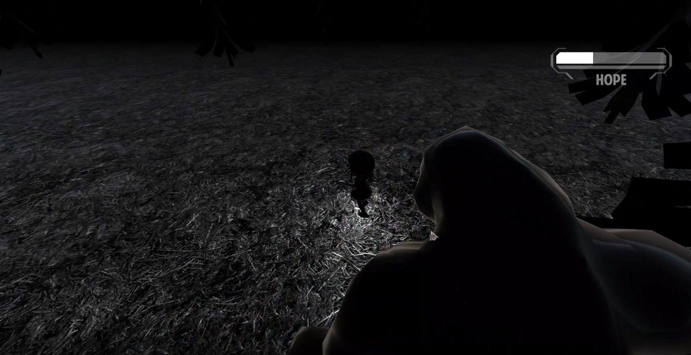

Summary
This game was created as part of the course 'Design of Computer Games' (TDDD23) at Linköping University during 6 weeks in the fall of 2019. The aim of the project was to create a gaming prototype with focus on design details, communication, progression and skill level for the player.
Shades is a horrorthemed RPG game that evolves around an unnamed character in a dark, black and white world. The player has to lead the character forward with the hope of getting out of the shadows and on the way they encounter small colorful objects and characters. Core game mechanics is changing between 3D view and top-down view, click-and-point interaction and inventory handling, the player needs to collect items to use in different ways. While escaping from shadow creatures, getting lost in a maze, a forest and a cemetary, the player slowly unravels who they are and what has happened.
The game was created using Unity and all design has been implemented through Unity Asset Store for being able to fully focus on game play and coding. It was an individual project and performed during the time period of 6 weeks (6 ECTS). A screencast/trailer can be found below:
Game Mechanics
As mentioned above, core game mechanics consisted of changing between 3D view and top-down view, click-and-point interaction and inventory handling. Below I will briefly go through these three implementations. Other than this, a lot of coding was spent on creating an enemy shadow creature that hunts the player, conversation between characters and movement for the player.
Interaction with objects
I knew that I wanted the player to find out things of the plot by interacting with objects. For this I developed a script called interactionObject that I added to all the items that the player can interact with. To emphasize that these were interactable, they store the original color of the object and when the player hovers the mouse over the object, they both display the name of it and makes it lighter. When clicking on the object, a small menu is displayed that the player can choose from and either find out more things or walk away. An additional function for this script was to add a 'destroyable' feature. If the object was marked as destroyable, then it can be destroyed with an axe that the player can find and add to their inventory.
Inventory
The inventory was a fun and interesting game mechanics to implement. I spent a lot of time to find different ways to make this work in the most efficient way. The code behind it was implemented with three classes, one representing an item, one an inventory and one database. The database stores all the possible items that exists in the game in a list with an ID, description and image to each and one of them. The inventory keeps track of the items that the player currently has. By further connecting these classes to two similar classes, UI-item and UI-inventory, I connected the data to actually display the items on screen and with the possibility for the user to interact with the items in the inventory. I thought this was one of the most interesting things to work on and I would like to develop it further with the possibility to combine items.
Perspective changing
The perspective changing mechanics was implemented as a way to force the player to think outside the box when solving different puzzles and problems in the game. The camera controlling was implemented so the view is clamped at one position but each time the player uses the scrollwheel, the view changes on the y-axis. This allows the player to choose a camera view that they think fit, but they will also be forced to use it in different situations. In some levels, a top-down-view is the only thing that allows the player to actually see all things in the scene, and in some levels, they need a regular third person view.
Game Design
Who are you? Why is everything so dark? You wake up in darkness and without color, with only a small lamp to guide you through the world. By interacting with objects you start to unveil how to find your way out? But will you be able to change perspective enough to gather hope and keep fighting the shadows away?
Plot
Shades is a horrorthemed RPG game that evolves around an unnamed character in a dark, black and white world. The player has to lead the character forward with the hope of getting out of the shadows and on the way they encounter small colorful objects and characters. Core game mechanics is changing between 3D view and top-down view, click-and-point interaction and inventory handling, the player needs to collect items to use in different ways. While escaping from shadow creatures, getting lost in a maze, a forest and a cemetary, the player slowly unravels who they are and what has happened.
Gameplay
The user needs to discover how to use the camera movement in order to change between a third person view and a top down view and by this solve puzzles. Store things you find in the inventory and always keep an eye out on your hope bar. Interaction with things in the world is essence in finishing the game, but do you even want to find out everything?
Teaching feedback & visuals
Feedback and teaching for the player is introduced in the beginning in a tutorial kind of area and here the player will get hints on how to play the game. It will also be impossible for the player to continue on if not learning how to play in this safe area in the beginning. Some teaching feedback is introduced by audio when fighting enemies since when hunted by a shadow creature, a scary sound will start playing.
Progression
Progression and variance in the game is partly introduced by going into more complex levels and by changing who the player can trust. More and more dangers are introduced as the player moves on, the possibility that the player loses hope will be higher towards the end.
Skill level
The skill level in Shades are mostly built upon the users rotation of the camera. An experienced player will more likely see where and when it is most useful for a certain view. Experience regarding similar click-and-point games will also help because some objects need more interaction than others and sometimes you need to listen carefully to what the character says.